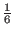
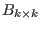
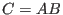
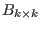
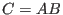
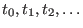

Next: Leontif Economic Models Up: Applications Previous: Cryptography Contents Index
When people assign a probability to an event, they are assigning a number,
If an event can never occur, the probability is 0
. If the event can't fail to occur, the probability is  .
The probability of throwing 13 with a pair of dice is 0. The probability that the sum of the numbers is
.
The probability of throwing 13 with a pair of dice is 0. The probability that the sum of the numbers is  on a pair of dice is 1. The probability that an event will not occur is one minus the probability
that it will occur. The probability that a two and a four will show on a pair of thrown dice is
on a pair of dice is 1. The probability that an event will not occur is one minus the probability
that it will occur. The probability that a two and a four will show on a pair of thrown dice is
 . The probability that we won't have a two and a four is
. The probability that we won't have a two and a four is
 .
(The symbol
.
(The symbol  is short for not.)
is short for not.)
Probability is an estimate of real events. Though the probability is  that a 5 will show when we throw one die, this does not mean that if we throw a die six times that a 5 will come up once. It does mean that it is reasonable to assume that a 5 will appear. It is a very good bet.
A probability matrix is a square matrix whose entries are probabilities and
for which the sum of the entries in each row is 1. In other words, if
 is a probability matrix, then
is a probability matrix, then

A probability matrix is also called a stochastic matrix.4.2
Stochastic matrices have the nice property that they are closed under matrix multiplication. If we have
that
 and

are both stochastic matrices, then 
is also a stochastic
matrix. Let's prove this.
and

are both stochastic matrices, then 
is also a stochastic
matrix. Let's prove this.

![$\displaystyle =\sum_{i=1}^k a_{m,i}*\sum_{j=1}^k b_{i,j}=\sum_{i=1}^k a_{m,i}\;\;\;\left[\text{because}\;\;\;\sum_{j=1}^k b_{i,j}=1\right]$](img959.gif)
One use for probability matrices is to describe phenomena which can have a finite number of different states
any of which can be observed to occur at various times  . For example, your blood pressure could be measured every hour and given one of the three ratings: high, normal or low. So your initial state,
Let's make up an example of how a researcher might use a Markov process to predict future events. Suppose that an intrepid scientist discovered that there was an 80% chance that the child of a person who liked country music would also like country music. Also, there is a 15% chance that the child of a person who doesn't care for country music will spend countless hours swooning over Hank Williams, Sr., et al. What percentage of the population would like country music after 4 generations given that, initially, 40% of the population were tuning in to country music stations?
We start by drawing a special type of network called a tree. A tree is a network in
which each junction has at most one branch with flow into the junction and at least
one junction with no flow into it. For systems
representing Markov processes, we are dealing with
 possible states for each junction, so any junction will have either
possible states for each junction, so any junction will have either  branches flowing to
other junctions or no branches flowing to other junctions. The tree diagrams for our country music
system are given in Figure 4.10.
branches flowing to
other junctions or no branches flowing to other junctions. The tree diagrams for our country music
system are given in Figure 4.10.
We use these diagrams to create the transition matrix for the Markov process.
This will allow us to calculate each Markov chain.
We first convert the percentages to probabilities (so that
 , for instance).
Then these probabilities are used to create the columns for the transition matrix.
, for instance).
Then these probabilities are used to create the columns for the transition matrix.

The transition matrix  can now be used to calculate the next state for any given state. For example,
given that initially
can now be used to calculate the next state for any given state. For example,
given that initially  of the population likes country music, the next generation would have
of the population likes country music, the next generation would have
From this we conclude that  of the next generation will like country music and
of the next generation will like country music and  will be
ambivalent. To calculate the state of the Markov process after
will be
ambivalent. To calculate the state of the Markov process after  generations, we simply multiply
the column matrix containing the initial state probabilities by
generations, we simply multiply
the column matrix containing the initial state probabilities by  . For four generations of
country music listeners we would have the transition matrix
. For four generations of
country music listeners we would have the transition matrix

We use this transition matrix to calculate the percentage of great-great-grandchildren who will be enjoying country music.
This shows that roughly  of the population will like country music after four generations. We
would conclude that the percentage of the population who listens to country music stays fairly constant
from generation to generation.
of the population will like country music after four generations. We
would conclude that the percentage of the population who listens to country music stays fairly constant
from generation to generation.


![\includegraphics[width=3cm,height=3.8cm]{markov.eps}](img966.gif)